Cheat sheet
Every icon, mouse gesture and key on one page - print it (it fits on two A4 sheets) and keep it beside your screen. Hover over any icon in the app and it says what it does.
The idea
Sweeps are at the heart of it: a profile (the cross-section) pushed along a spine (the path). The scale graph says how big the profile is along the way; the end profile lets it morph.
+ objects add, − objects cut, a combine joins them. Change any graph later and everything follows.
3D view - mouse
| Drag | turn round the model |
| Middle-drag | slide the view |
| Wheel | zoom |
| Click | select (empty space: nothing) |
| Shift-click | add to the selection |
| Ctrl-click | take out of the selection |
| Shift / Ctrl-drag | select with a band (adds / removes) |
| Double-click an object | curve editing on / off |
| Click a plane square | face that graph's plane and edit its points |
| Right-click | quick menu: selection, gizmo, pivot, curves, dials, place, measure, dimensions, + − ∩ = A= ×, copy, mirror |
| Right-click while a tool runs | done (finishes a route or drawing; cancels placing) |
Curves and points shown in 3D
| Drag a point | move it |
| Double-click a point | sharp ↔ smooth |
| Double-click the curve | add a point (while facing its plane) |
| Right-click a point | sharp / smooth / delete |
| Corner square | drag in to round, past it to chamfer; click to type |
| Fillet ring | drag a knot along it; drag the stem square for the radius; + adds a knot |
The gizmo and the dials
| Arrow tips | move along that axis (scale it, in scale mode) |
| Rings | turn about that axis |
| Centre - drag | move with the screen (in scale mode: scale evenly) |
| Centre - click | arrows switch between move and scale |
| Dials (◎) | grab a dial's dots: spin (amber, first section), roll (middle), twist (violet, last section) |
Curve points win over the gizmo; the gizmo wins over the navigator.
The navigator (view cube)
| Click a face | look straight at that side |
| Drag the cube | turn the view |
| The four arrows | a quarter turn that way |
| Dot, lower left | back to the starting view |
| 🔍 click / double-click | zoom to the selection / fit everything |
| 🔍 drag sideways | fine zoom |
| ✋ drag / double-click | slide the view / centre on the model |
| ✥ drag / double-click | move the navigator / put it back |
It stays faint until the pointer comes near.
Placing a new object
| + − ∩, then click | place it there |
| + or −, then drag | size it as it is placed: the drag is its footprint, let go, move up for the height, click (switch drag: size) |
| After a click or a footprint: type | the lit size; Tab the next (width, depth, height); Enter done |
| Switches, top left | drag: size / draw / from the face · from: auto / centre / corner · keep proportions |
| from the face (on at first) | push and pull - out of the face it adds, into it it cuts: a flat face lights up with its own outline; click or drag it and pull the height (−: the depth). The new object's profile is that outline |
| Wheel, on from the face | the offset: the outline grows or shrinks; click offset … mm at the top left to type it |
| Drag, switch on draw | draw its profile instead: click points, drag for curves, click the first point to close |
| − on a face | runs into the face and cuts the part under it; a + on a face joins that part (with A= on) |
| Wheel / Shift+wheel | size it 10 % a notch / turn it 15° a notch |
| Type a number | exact distance; Tab picks the next distance; S snapping on / off |
| The bar at the left | the placement settings, while you place (and move with the pin) - see below |
| Esc or right-click | cancel |
With A= on (the default), a new object joins whatever is selected.
Measure and other tools
| ⟺ measure | click two points; type a distance + Enter to move the selected object to it; its settings are a bar at the left (below) |
| ⌖ pivot | click a point: turning and scaling happen about it; Esc puts it back |
| ⤳ route | click the start, Shift-click points to pass, click the end; its bar at the left sets what it is made with |
| ✎ draw on the surface | drag draws, Shift-drag erases; clicked points + Enter make a smooth curve |
| 📍 reposition | click a surface to move the selected object there |
Graphs - mouse
| Click a point | select it; drag to move |
| Shift-click | add a point to the selection |
| Drag on empty space | select with a band (Shift adds) |
| Double-click the curve | insert a point |
| Double-click empty space | add a point at the end (open curves) |
| Double-click a point | corner ↔ smooth (also Alt-click) |
| Drag a handle | both handles; Alt-drag: that handle only |
| Alt-drag a segment | bend it into a true arc |
| Shift / Ctrl while dragging | 15° steps / snap to the grid |
| R label at a corner | drag out to round, back past zero to chamfer; double-click to type |
| R label of a profile | click and type: the whole profile scales to that radius |
| Length, angle, x,y labels | click to type an exact value |
| Wheel / middle-drag | zoom / slide (also Ctrl+drag) |
With several points selected
| Ring / squares / centre | turn / scale x or y / move them; click the centre to switch |
Typing in a graph
| Point selected, type 40 Enter | the segment reaching it becomes 40 mm |
| Delete | delete the selected point |
Graphs - icons
| ⤢ | fit the drawing |
| ○ | open / close the curve |
| dashed line | guide: measure to another object's curve |
| L with a square | constrain: horizontal, vertical, parallel, perpendicular, equal, tangent |
| ▲▼ | switch between the two scale curves |
| arc | arc mode: drag a segment to bend it; click for a tangent arc |
| two outlines | offset (Shift-click bakes it in) |
| mirrored shape | mirror; each click the next axis |
| picture | a reference image to trace |
| sheet, bottom right | the curve as a dimensioned PDF |
Above the graph
| preset / choose… | starting shapes (circle, gear, thread, fluted…) |
| import SVG… / export… | a curve in from SVG; out to SVG or DXF |
| fit to mesh | profiles from a reference mesh |
| ⊞ / ❐ | all graphs side by side / in their own window |
Scale graph
| one curve | ↕ two | ↔ two | one curve, or a second one top/bottom or left/right |
| scale about | the spine, or the profile's centre |
On the right edge, the ghost list shows other objects' curves to draw against.
Node editor - mouse
| Click / Shift-click | select / add to the selection |
| Drag a node | move it |
| Double-click the name | rename |
| Drag ▶ to an input | wire it in |
| Drag a wire off an input | re-route it, or drop it on empty space to disconnect |
| Curve port to curve port | link the curves (spine, profile, end, scale) |
| ◇ attach port | click: attach dialog; drag to another ◇: attach |
| Right-click empty space | add an object, combine, array, stack or route |
| Right-click a node | duplicate, mirror, rename, colour, disconnect, delete |
| Wheel / drag empty space | zoom / slide (also middle-drag) |
Node editor - on a node
| Sign badge | click: + → − → ∩(+) → ∩(−) |
| 🔒 lock | can't be selected or moved |
| 👁 eye | show / hide |
| blend (combines) | click cycles fillet / chamfer / none |
| ring | hollow: type a wall thickness (0 = solid) |
| eye-dropper | colour |
| two rings | open the profile in the shape builder |
| ƒ | follows a parameter: hover shows where from |
| key number | twist, blend radius or copies: click to change |
| G0 G1 G2 | how smooth a combine's seams came out |
Its toolbar
| ⤢ … ❐ | frame all, the same makers as in the 3D view (same drawings), own window |
3D view - icons
Each icon is a small drawing of what it does: what the button adds or changes is in orange. Point at one and it says its name and what it does; Settings ▸ Names under the icons writes the name under each.
Top left - what you add to the model
Build with AI, and the script editor 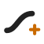 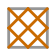 SubD over a part
SubD over a part
Under each of the three signs - its corner opens them
coil that adds 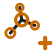 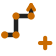 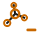 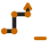 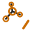 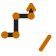
The node toolbar has the same three corners. Every corner of icons is faint until the mouse is on it. Settings ▸ Icons in the order of the work brings the older rows back.
Top right - the file, and what you make of the part
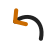 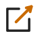 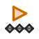 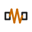 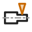 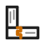
Bottom left - handling the model
a click selects the piece…or its whole part 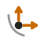 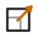 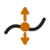 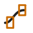 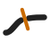 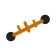 moveturn
moveturn
Bottom middle and right
| X− X• X+ … D | align and distribute (2+ selected); drop onto the floor |
| PAUSE FULL | stop rebuilding / build the real model now (in draft mode) |
referencessection 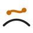 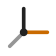 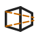
How the model is drawn
colourgreyclay with edgeswireedgesglasszebrachromeoverhangcurvature 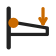
A small ◢ in an icon's corner holds more tools: click the corner.
Animation
| Record, then change something | a key at the clock's time - a number, a place, a curve, shown / hidden |
| Record view · Turntable | the camera is keyed when you turn or zoom · one turn round the model |
time in a number field | runs 0 to 1 over the clip: 360 * time, 30 * wave(time) |
| ruler, or a click | moves the clock |
| drag a key · a frame · a row's name | one key · select several, move together · the whole row |
| double-click · a key's handles | a new key · shape the curve |
| the panel's title line · graph · Done | drag to move, double-click to fold · hide the graph · put it all away |
| fast / full | a quick draft per frame / the real model; built frames are kept |
| Save… | video, GIF, WebP, pictures, an OBJ per frame; passes: depth, normal, object, material, motion |
Build with AI - the four steps
| ① describe it · Copy message for AI | one message with what you want and all the AI needs |
| ② any AI chat | paste (Cmd/Ctrl+V), send; then Copy on the box with the code |
| ③ Paste the AI’s answer and build it | takes what you copied and builds it - nothing to paste by hand |
| ④ describe the change · only that part | same chat, then ③ again; one part made again, the rest stays |
| Show it what you mean | a picture · a sketch · an STL / OBJ to rebuild · parts from your shelf as examples · check against your design rules |
| ✏ Mark it on the model… | with a change: the 3D view to draw on - circle, arrow, cut line in red - sent with it |
| Ctrl+G · Ctrl+Shift+G (nodes) | group the selected nodes into a folder · take the group away; ▾ / ▸ closes and opens it |
| parts (make-it group) | 100 ready parts with pictures: gears, bearings and housings, couplers, mechanisms, hinges, a ball joint, a rack, screws, nuts, washers, inserts, extrusion brackets, boxes, clips, grilles, glands, pipe fittings and flanges · find one by name |
| tool tray · save the cutting SVG… | a tray from a photo of your tools · or as foam sheets for a laser cutter: red to cut, blue to engrave |
| 🎤 hold and speak (bottom of the window) | “cell size 8” · “make it 20 mm longer” · “round the edges 2 mm” · “undo” · a command by its name: “tool tray”, “pillow block”, “find thread” · anything else goes to the AI |
| How it was built | each part, its form and size; a click selects it |
| By itself (▶ Build it) · With my AI chat ①→②→③ · Connect an AI app | set it up once, then one button · copy, paste into ChatGPT, Claude or Gemini, paste the answer · Claude’s desktop app in one click |
Measure - the bar at the left
what it countskeep as a dimensionrelative / absolutethe angle toolink turnlink sizekeep offsetclear
Under the bar: the reading, and which part a typed distance moves. Done turns it off.
Placing - the bar at the left
profilescale graphwraphow deepsegments as one solid 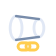
snap to the middle tooline up with the edgefrom origin / its edgekeep as a dimensionshow the objectcontinue a spine
− + with a number: sides, length, radius, depth, segments, snap, distances from an edge.
A new route - the bar while you pick
its planesmooth or squareinside the part
− + radius, keeps off, bends, wander - remembered for the next route.
Section - the bar at the left
what it cutswhich loophow it becomes a curvedetailuse as profilemove the part thereall loops, holes cutuse as spinesave to the librarystack from cutsclose the ends
− + the plane's height and tilt; the anchor count under the bar.
Stick figure - the bar at the left
With a ball selected: − + size, squash, roll, egg; its section from a list.
Drawing on the surface - the bar at the left
pencileraserwhat it becomesfill loopstapered endspen pressureclear all− + thickness, fillet, detail
| drag on the part / click points, Enter | a stroke / a smooth curve; ✓ Done at the top stops drawing |
Sculpt, nets, reliefs and the box cage - the bar at the left
brush on / offpullpushsmootherasegrab− + size, strength, soft
paint a reliefrelief or patterna blanka net offall nets off
box cage: on / off 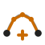
| # beside a hovered face | a net of points on it; drag a point to lift or dent the face |
| pull · push · smooth · erase · grab | the brush; erase takes the sculpting off, a relief stays |
| Relief or pattern…, click a face | 26 patterns (knurl, hexagons, scales, Voronoi, weave…) or a picture or your own tile; cell size, turn, stretch, depth; on the face, projected or wrapped round |
| Paint a relief…, click a face | a canvas made to fit it; paint in grey, the model follows; repeat: one seamless tile |
| Blank for a face… | a picture made to fit the face, to paint elsewhere |
| ✓ Done at the top | back to the manipulator |
| ◈ infill · ▧ surface patterns | fill a part inside · cages, rind, decals, drawing, emboss / engrave (a mesh) |
| box cage: select, then ⬚ | drag its points: bend, bulge, taper; finer / coarser. Violet and dashed - a SubD's own cage is light blue and solid |
Grow, glasses, scans, looks
| array · place on: grown | each copy to the next by one step - move, turn, scale; branches, generations, jitter; start from a pine cone, shell, tree, coral, flower |
| Import a scan (PLY, GLB, glTF) | from a phone app or a scanner: millimetres, Z up, stray bits dropped |
| lens panel · 📍 measure on a face scan… | click pupils, nose top and sides, temples, ears: the face numbers and the nose's shape |
| ● materials (bottom right) | pick one, Apply to the selected; roughness, metal, opacity, outline; textures: wood, concrete, marble, granite, brushed, cork, hammered or your own picture |
| 💡 lights (bottom right) | your own lights: add, remove, drag on the sky dial; with the camera or fixed; colour, brightness |
| Panorama (HDRI) (in lights) | studio or a place, or your own .hdr; its light from reflections only to all of it; turned, brightness; behind the model too |
| 📷 picture · the camera | background: colour, gradient, picture, panorama · lens flat or 24–135 mm, depth of field (focus on a part, sharp zone), glow, vignette, motion blur; also in the view once it stands still |
| Relief or pattern… · invert · mask | swap high and low · a grey picture says where it goes |
| lens panel · 👓 Make the frame | rims, bridge, saddle on the nose, end pieces, temples - on the scan, with a skin check |
SubD - the bar at the left
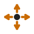 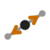 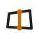 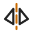 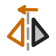 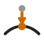 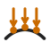
Drawn over another part
draw: points, then the dot for a face 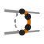 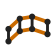 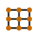 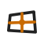 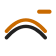 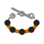
| click on the other part | a point on its surface |
| inside 3 or 4 points | the face is shown, with a dot: click the dot |
| drag a point | it slides over the part; with a falloff, its neighbours follow |
| drop a point on another | the two become one |
| × ◆ beside a point | take it away / a sharp corner of the outline |
| rings on: click on a limb (drag across for a tilted one) | a ring of points round it; the next ring joins the one before |
| drag the middle of an open edge | a new face; keep dragging: a row of faces along the stroke |
| strip on: press on the part, drag along | a strip of faces under the stroke |
| the dot in an opening | click: close it · drag to another opening's dot: join the two |
| relax on: brush over the points | they spread out evenly, still on the part |
| green ✓ Done at the top | leave (there is no ✓ on the bar) |
| a drawn part, selected: draw on | back into the drawing tools with it |
| a drawn part, selected: burn to a cage | an ordinary SubD cage from then on (undo brings the drawing back) |
| import · Trace, from an automatic start | the mesh as reference, its simplified cage ready to edit here |
Lattices - the bar at the left
the first two buttons: the pattern, and where it goes - by picturewalls thickerwalls thinner 
| a brush on: brush over the part | a colour wash at once, and "here: walls … cells …" at the pointer; the lattice follows when you let go |
| attractor / repeller on: click on the part | a point the lattice gathers round, or thins out round |
| drag a point · drag its ring | move it over the part · how far it reaches |
| − + ⇄ × beside a point | weaker, stronger (below nothing: a repeller) · walls or cells · take it away |
| attractor object on: click another object | the lattice follows it; its ring, value, ⇄ and × beside it |
| the square beside the part | one cell: drag its corner for the cell size, its wall for the thickness |
| the band along a gradient | drag the knob at either end for the value there |
| a number with a dotted line under it | click, type, Enter |
| panel · thin walls | as fast as possible · keep them in exports · keep them always |
| green ✓ Done at the top | leave; a click beside the part does not. edit infill at the left, or a click on the lattice: back in |
Arrays - the bar at the left
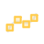 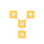
| − + beside a number | fewer, more: copies, rows, columns, spin and scale per copy |
| a number with a dotted line under it | click, type, Enter |
| green ✓ Done at the top | leave; a click beside the part does not. edit array at the left, or a click on the array: back in |
Sweep, array, coil, route, combine, joint, eggshell - their bars at the left
coil: presetsleft-handedprofile growsstraighten− + turns, pitch, radius
route: planesmooth / squareinside the partlivefind again 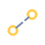
combine: sharpfilletchamferbridgesmoothas big as it fits− + radius; reach, bulge, flare
jointheld byhingesliderballpick the axisalong X / Y / Zflipplaychecktake off− + now at, from, to
sweep: adds / cutsfollows the spine 
eggshell: which mouldwhere it cracksopen at the topanother pattern− + wall, shards, crack depth, crack width
| edit sweep / edit combine / edit joint at the left | these bars wait behind their button; the others stand as soon as the object is selected |
| joint icon (beside measure), then a click on another part | the selected part is held by the part you click; then hinge / slider / ball, then point at the axis - it shows before you click (along an edge, a round face's axis, a face's middle); the steps are written under the bar |
| the round dot on a joint | drag it to turn or slide the part by hand; play runs it smoothly; into the animation turns its movement into keys |
| in an array's bar | a dot on every copy: click one to leave that copy out, again to bring it back |
Text on a part
raised text (under +)text cut in (under −)
| press on a part and drag | where the text goes: its place, width and direction; then type it, pick a font, raised or sunk and how deep. It shapes the part's own faces: still exact CAD |
| drag the frame | move it over the part |
| drag the dot at its end | size it |
| drag the ring above it | turn it (holds at every 15°) |
| click the frame / × | type again / take it off |
Keys
| Ctrl+Z / Ctrl+Shift+Z | undo / redo |
| Ctrl+N O S | new, open, save (Shift: add file / save as) |
| Ctrl+D | duplicate |
| A / S / C | add positive / negative / combine |
| Delete | delete the selection (over a curve point: that point) |
| X | 3D view: world / local axes; node editor: disconnect the node |
| F | fit the model in view |
| O | perspective ↔ flat |
| Shift+W | wireframe |
| P / B | pause rebuilding / full build now |
| L | lens: the full model in a frame |
| Q W E R | gizmo: move+turn, move, turn, scale |
| Esc | cancel / stop the current tool |
| Enter | finish a drawing; apply a typed value |
| Ctrl+R / F1 | Build with AI and the script editor / help |
Every number field takes arithmetic: 360/7, 12+3. Keys can be changed in the settings (⚙).